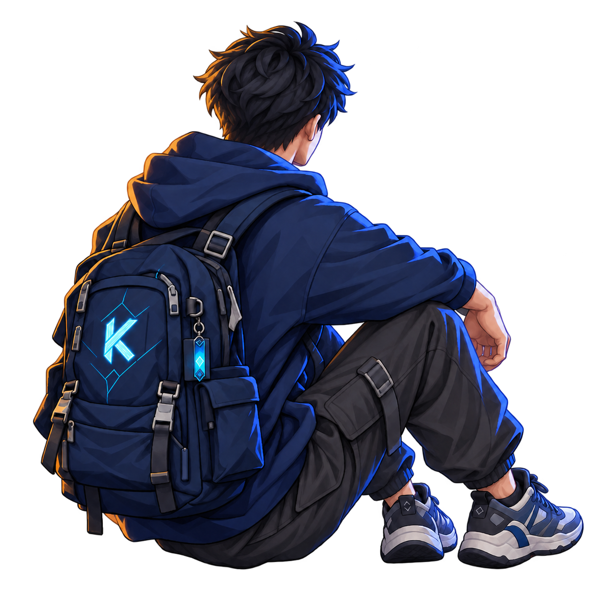
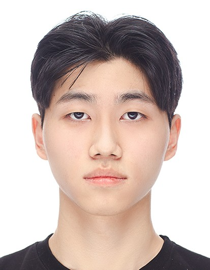

LET'S PLAY TOGETHER
Let's
Play Together!
Play Together!

다음 게임도 같이?게임을 좋아하는 마음에서 시작된 여정

PROJECT SELECT / 프로젝트
만들어 온 게임들
직접 고르고, 플레이와 개발 이야기를 만나보세요
카드를 고르거나 화살표로 넘겨보세요
검색 결과가 없어요
다른 게임 이름이나 기술로 찾아보세요.
EXPERIENCE / 경험과 활동
경험과 활동 더 보기 ↗함께 만들며 쌓아 온 경험
LET'S MAKE SOMETHING FUN
다음 파티, 함께 꾸릴까요?
프로젝트와 개발 경험에 대해 편하게 연락 주세요